PRESSE & MEDIA KIT · FACT SHEET
Pressematerialien für NihonPass
Hier findest du offizielle Logos, hochauflösende Illustrationen, Screenshots und das Factsheet zur App für redaktionelle Berichterstattung.
Factsheet
| App-Name: | NihonPass (日本パス) |
| Entwickler: | Marius Maaß |
| Plattformen: | iPhone (iOS 17+), Apple Watch (watchOS 10+), Widgets |
| Kategorie: | Gesundheit & Fitness / Reisen / Lebensstil |
| Sprachen: | Deutsch, Englisch, Japanisch |
| Preis: | Kyoto-Route dauerhaft kostenlos; Explorer Pass (alle weiteren Routen, Stempelbuch-Widget) für 2,99 €/Monat bzw. 24,99 €/Jahr (7 Tage Testphase); Gründerpreis 19,99 €/Jahr bei Abschluss bis 31.12.2026 |
| Datenschutz: | Kein GPS, keine eigenen Server, keine Werbung, Reisestand nur in der eigenen iCloud |
| Pressekontakt: | marius@nihonpass.app |
| Telefon: | +49 (0) 15679 515605 |
Kurzbeschreibung (Pitch)
NihonPass macht aus alltäglichen Schritten eine Reise auf echten Wegen durch Japan. Die App liest Schritte und Gehstrecke aus Apple Health. Damit wandert die Figur des Nutzers auf einer Karte von Station zu Station, zum Beispiel vom Fushimi-Inari-Schrein bis nach Arashiyama. An jeder Station gibt es einen Stempel wie im japanischen Goshuin-Stempelbuch. Kein Leistungsdruck, keine Pace, kein GPS: Jeder Spaziergang zählt.
Downloadbare Bild-Assets (High-Res)
Routenfotos (Beispiele)
Offizielle App-Screenshots (iOS)
Originale, hochauflösende Bildschirmfotos aus der deutschsprachigen App.
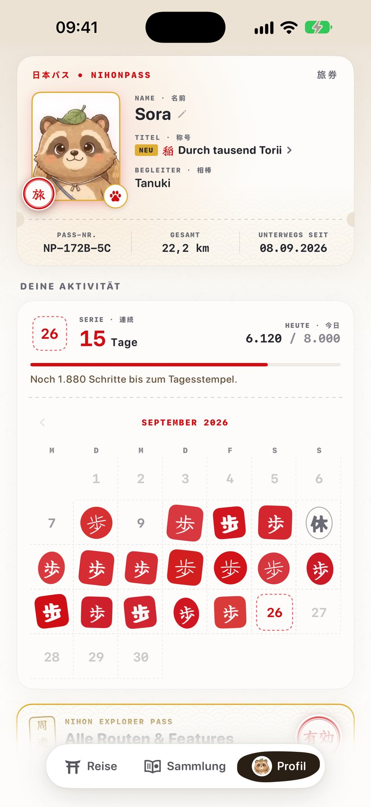
Reisepass & Aktivitätskalender
iPhone Screenshot (1320 × 2868)
↓ Herunterladen
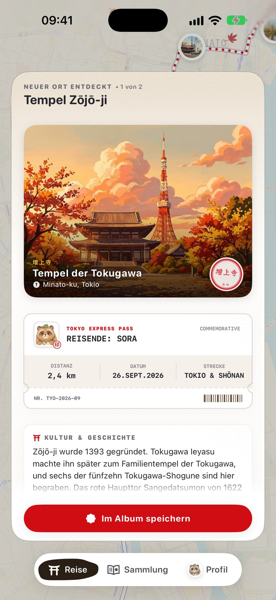
Neuer Ort entdeckt (Shinagawa)
iPhone Screenshot (1320 × 2868)
↓ Herunterladen
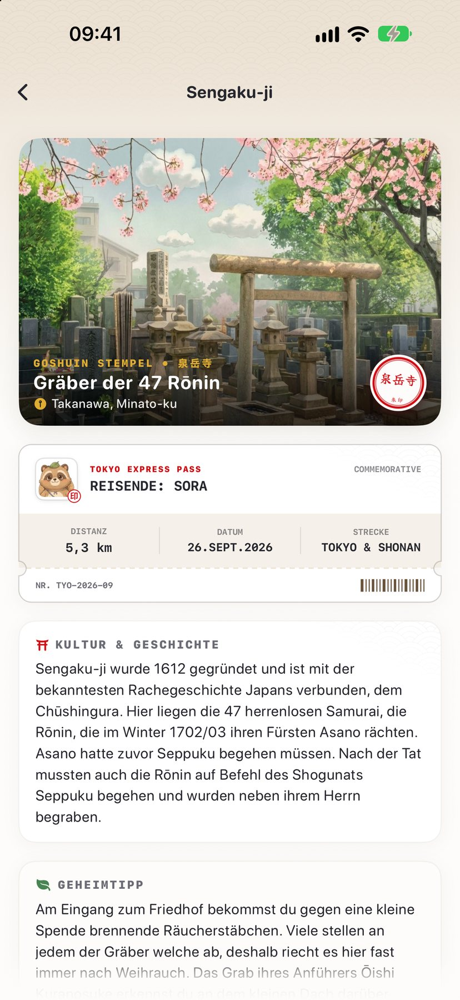
Stationsgeschichte (Hamarikyū)
iPhone Screenshot (1320 × 2868)
↓ Herunterladen
PRESS & MEDIA KIT · FACT SHEET
Press Materials for NihonPass
Find official logos, high-resolution illustrations, screenshots, and the app factsheet for editorial coverage and app reviews.
Factsheet
| App Name: | NihonPass (日本パス) |
| Developer: | Marius Maaß |
| Platforms: | iPhone (iOS 17+), Apple Watch (watchOS 10+), Widgets |
| Category: | Health & Fitness / Travel / Lifestyle |
| Languages: | English, German, Japanese |
| Pricing: | Kyoto trail permanently free; Explorer Pass (all further trails, stamp book widget) at €2.99/mo or €24.99/yr (7-day free trial); founder price €19.99/yr when subscribing by Dec 31, 2026 |
| Privacy: | No GPS tracking, no servers of our own, zero ads, progress only in your own iCloud |
| Press Contact: | marius@nihonpass.app |
| Phone: | +49 15679 515605 |
Short Description (Pitch)
NihonPass transforms everyday steps into a mindful journey across historic trails in Japan. Integrating seamlessly with Apple Health, your daily walking distance advances your companion from shrine to shrine, from Fushimi Inari all the way to Arashiyama. Each stop rewards you with a collectible seal inspired by traditional Japanese Goshuin pilgrimage stamp books. No performance pressure, no pace tracking, zero GPS: every casual stroll counts.
Downloadable Image Assets (High-Res)
Companion: Tanuki
Transparent PNG cut-out
↓ Download
Companion: Shiba Inu
Transparent PNG cut-out
↓ Download
Companion: Neko
Transparent PNG cut-out
↓ Download
Route Photography (Examples)
Official App Screenshots (iOS)
Original, high-resolution screenshots from the English version of the app.
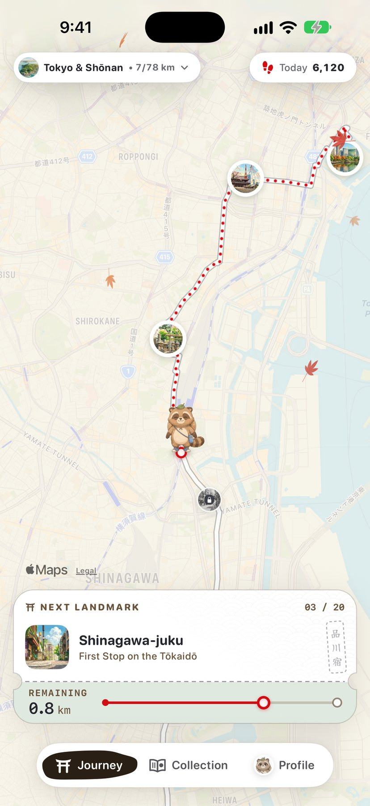
Map & Trail Progress
iPhone Screenshot (1320 × 2868)
↓ Download
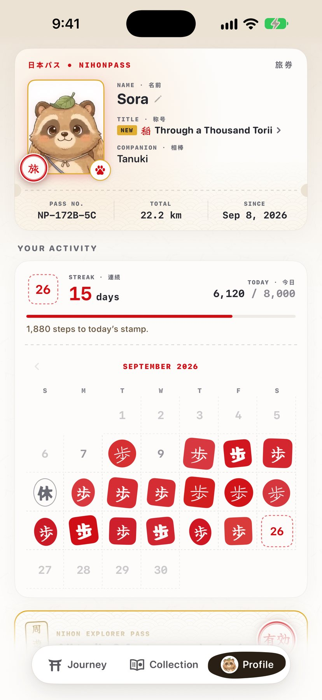
Travel Passport & Activity Calendar
iPhone Screenshot (1320 × 2868)
↓ Download
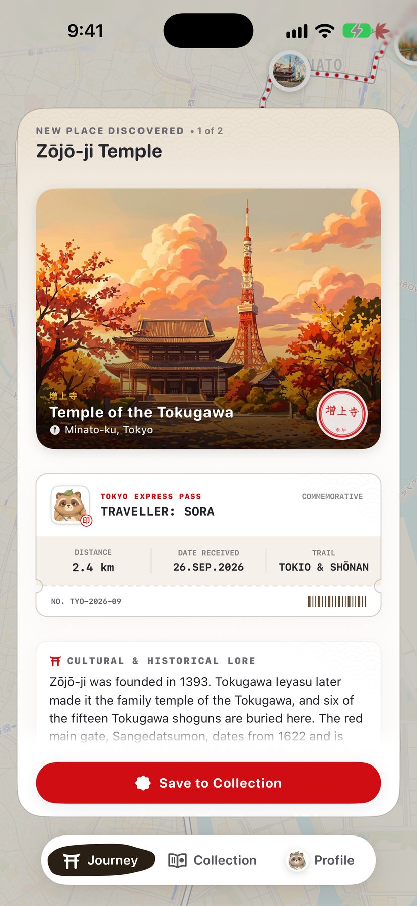
Landmark Discovered (Shinagawa)
iPhone Screenshot (1320 × 2868)
↓ Download
Station Story (Hamarikyu)
iPhone Screenshot (1320 × 2868)
↓ Download
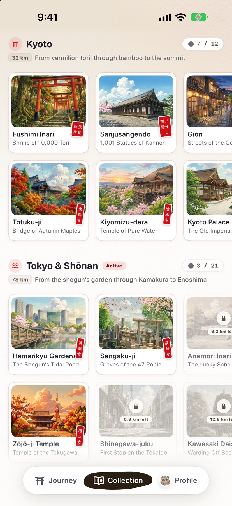
Goshuin Stamp Album
iPhone Screenshot (1320 × 2868)
↓ Download
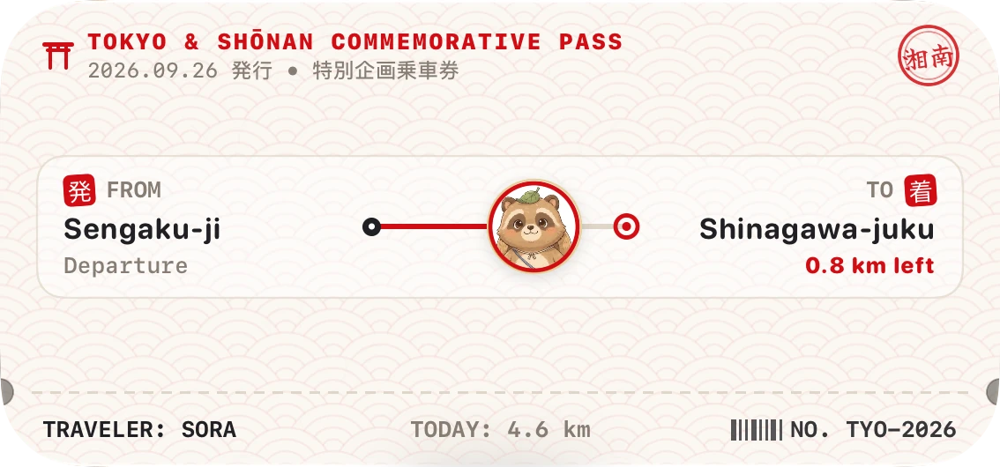
All widgets
Home Screen widgets (PNG, transparent)
↓ Download
プレス＆メディアキット · ファクトシート
NihonPass（日本パス）プレス向け素材
メディア・報道関係者の皆様向けに、公式アプリアイコン、高解像度グラフィック、スクリーンショット、および基本情報を掲載しています。
基本情報（ファクトシート）
| アプリ名: | NihonPass（日本パス） |
| 開発者: | Marius Maaß（マリウス・マース） |
| 対応プラットフォーム: | iPhone (iOS 17以降), Apple Watch (watchOS 10以降), ウィジェット |
| カテゴリ: | ヘルスケア / フィットネス / 旅行 / ライフスタイル |
| 対応言語: | 日本語、英語、ドイツ語 |
| 価格: | 京都ルートは完全無料。エクスプローラーパス（月額2.99ユーロ／年額24.99ユーロ、7日間無料トライアル。2026年12月31日までの登録は創業記念価格の年額19.99ユーロ） |
| プライバシー: | GPS不使用、独自サーバーなし、広告・トラッカーなし（進捗はご自身のiCloudで同期） |
| プレス窓口: | marius@nihonpass.app |
| 電話番号: | +49 15679 515605 |
アプリ概要（ピッチ）
NihonPass（日本パス）は、毎日の何気ない歩みを、日本の歴史ある名所を巡る旅へと変えるウォーキングアプリです。Appleヘルスケアの歩数と連動し、伏見稲荷から嵐山まで、マップ上を旅人が一歩ずつ進んでいきます。駅や名所に到着すると、神社仏閣の「御朱印」をモチーフにした美しいスタンプを獲得。タイム測定やGPS追跡はなく、マイペースに歩く楽しさを大切にしています。
公式画像アセット（高解像度）
ルート写真サンプル
公式アプリ画面（iOS）
日本語版アプリの公式高解像度スクリーンショット（iPhone版）。
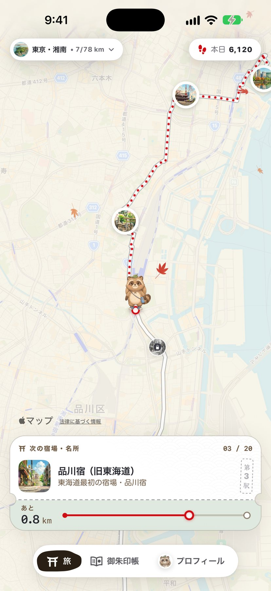
街道マップと旅路
iPhone Screenshot (1320 × 2868)
↓ ダウンロード
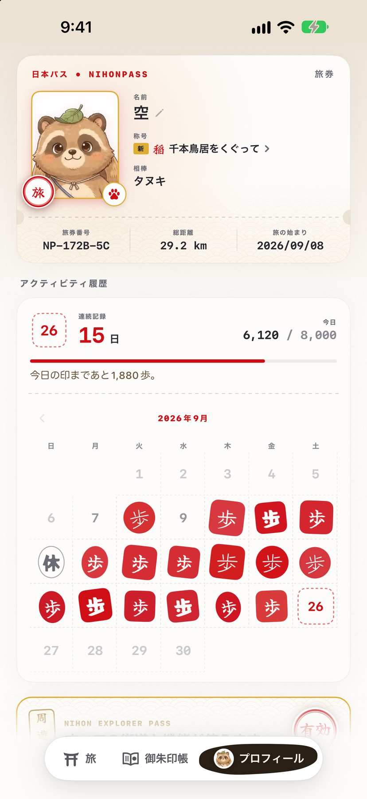
旅券とアクティビティカレンダー
iPhone Screenshot (1320 × 2868)
↓ ダウンロード
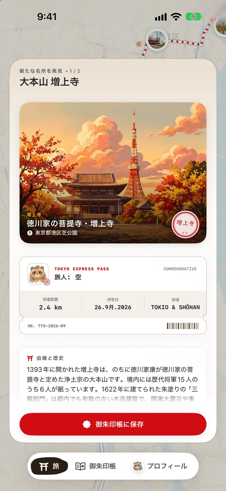
新しい名所の発見（品川）
iPhone Screenshot (1320 × 2868)
↓ ダウンロード
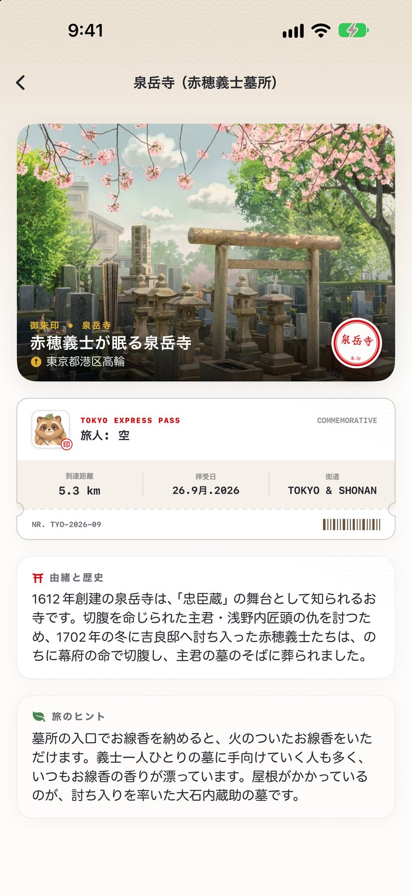
宿場町の歴史解説（浜離宮）
iPhone Screenshot (1320 × 2868)
↓ ダウンロード
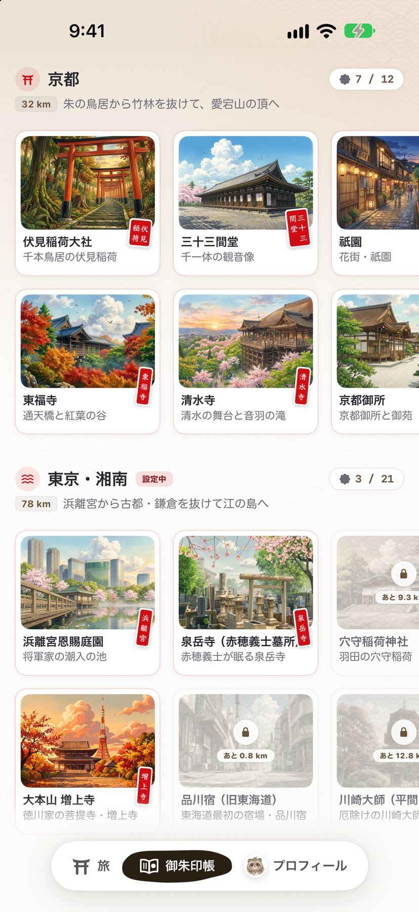
御朱印スタンプ帳
iPhone Screenshot (1320 × 2868)
↓ ダウンロード

{kind=link}
{kind=link}
{kind=link}


{kind=link}
{kind=link}
{kind=link}
{kind=link}
{kind=link}
{kind=link}
{kind=link}
{kind=link}
{kind=link}
{kind=link}
{kind=link}
{kind=link}
{kind=link}
{kind=link}
{kind=link}
{kind=link}
{kind=link}
{kind=link}